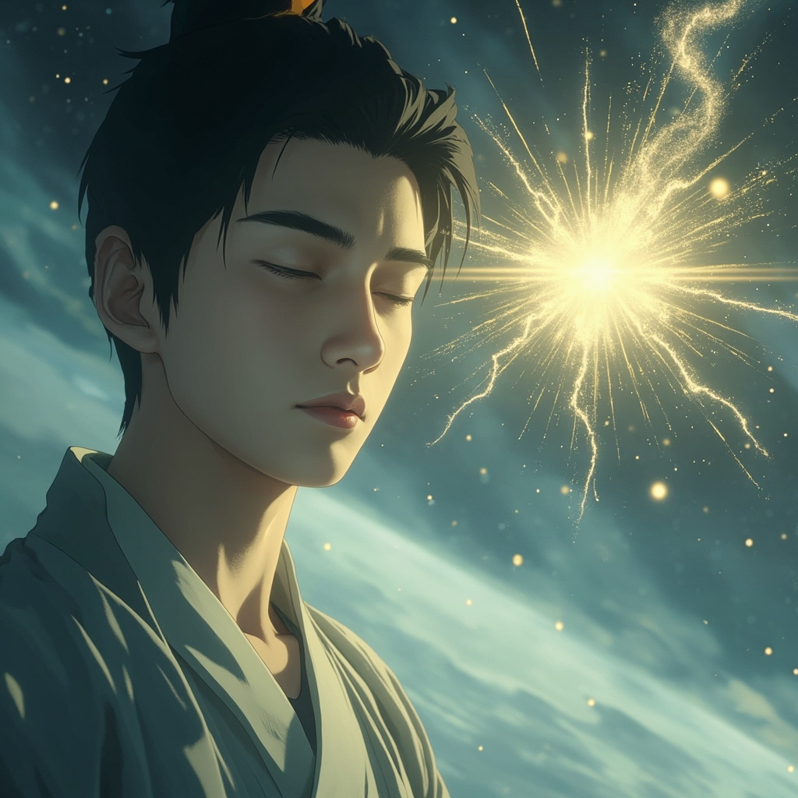

萬古塵埃 · 彩色CG漫畫版
晨鐘響了第三遍，祠堂的門還未開。
葉塵跪在冰冷的石板上，額頭貼地 雙手平舉過肩——這是葉家旁系子弟每日必修的「敬祖禮」。
他已經跪了兩個時辰，膝蓋早已麻木，但不敢起身。
因為今天是大比選拔的前一天，家主葉蒼雲下令：所有旁系子弟必須在祠堂守夜，以示對祖先的敬畏。
「葉塵，你還敢來？」
一個輕蔑的聲音從身後傳來。葉天霸，葉家主脈最驕傲的天才，十七歲便已突破感氣六層。
「你十六歲了，連感氣境的門檻都摸不到。一個廢物，也配跟我稱兄道弟？」
葉塵的目光落在右手手背上——那裡有一道淡淡的疤痕，是他三歲時被母親遺留的一枚玉墜劃破的。
玉墜呈暗灰色，表面佈滿細密的紋路，像是一片片微小的塵埃凝結而成。
「塵兒……這枚玉墜……是你最大的秘密。」
祠堂恢復寂靜。葉塵一個人跪在昏暗的燭光中，閉上眼睛，開始默念家族傳授的最基礎修煉法門。
對葉塵來說，它只是一段背了十年的咒語——因為無論他怎麼念，靈氣從來不會進入他的身體。
就在指尖觸碰到玉墜的那一刻，他感覺到了一絲異樣。
不是溫度變化，也不是震動。而是一種……呼喚。
就像遠方有人在輕輕叫他，聲音微弱得幾乎聽不見，卻讓他渾身顫慄。

在他閉眼的瞬間，頸間的玉墜表面裂開了一道幾乎看不見的細紋——就像乾涸的土地終於等來了第一滴雨水。
而在某個遙遠得無法想像的空間裡，一粒微小的塵埃緩緩旋轉著，散發出一絲微弱卻堅定的光芒。
那是葉塵的第一世記憶，正在甦醒。